Easy clusters
Let’s start with finding clusters using an easy dataset.
Generate data
Install requried libraries
pip install scatterd
pip install sklearn
# Imports
from scatterd import scatterd
from clusteval import clusteval
# Init
cl = clusteval()
# Generate random data
X, y = cl.import_example(data='blobs')
# Scatter samples
scatterd(X[:,0], X[:,1],labels=y)
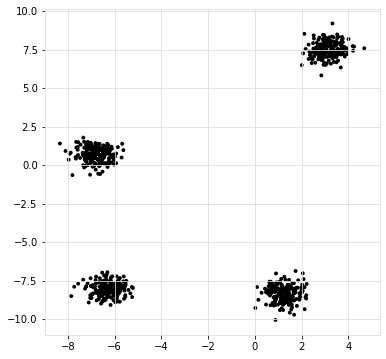 |
|

Cluster Evaluation
# Determine the optimal number of clusters
# Import
from clusteval import clusteval
# Initialize
ce = clusteval(evaluate='silhouette')
# Fit
ce.fit(X)
# Plot
ce.plot()
ce.plot_silhouette()
ce.scatter()
ce.dendrogram()
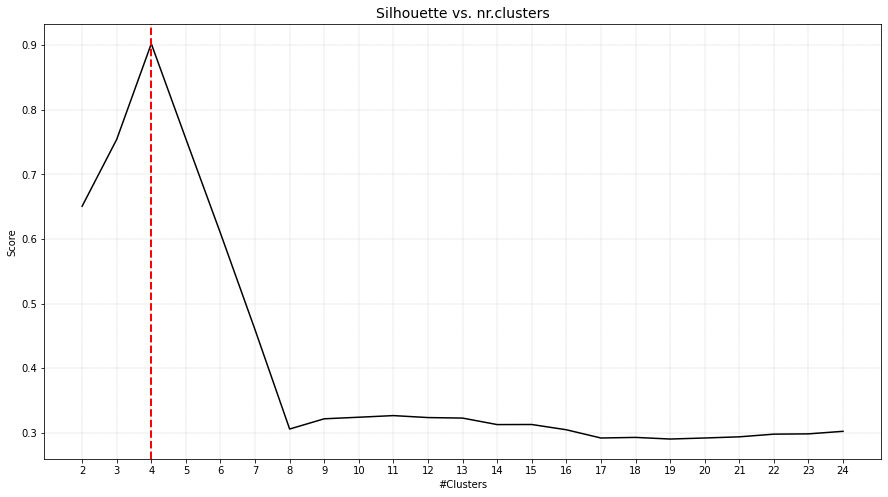 |
|
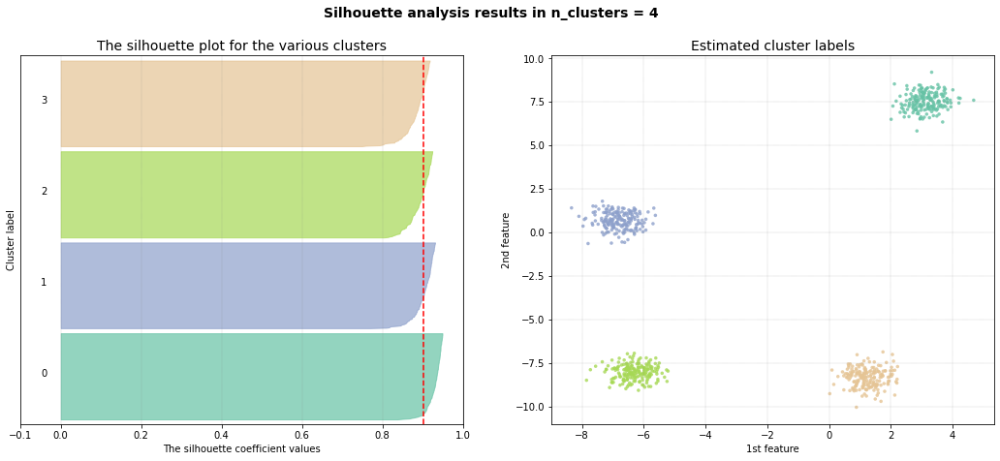 |
|

Snake clusters
The definition of a cluster depends on, among others, the aim. In this experiment I will evaluate the goodness of clusters when the aim is to find circular or snake clusters.
pip install scatterd
pip install sklearn
# Generate data
X, y = ce.import_example(data='circles')
scatterd(X[:,0], X[:,1],labels=y)
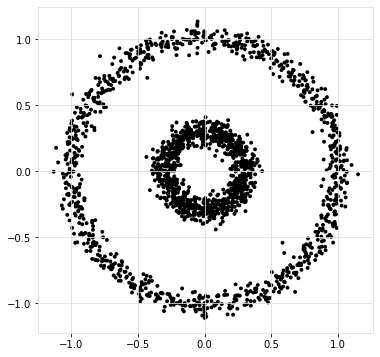 |
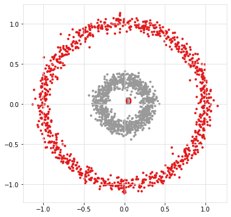 |
Ward distance
If we aim to determine snake clusters, it is best to use the single linkage type as it hierarchically connects samples with the closest group. For demonstration purposes, I will show what happens when a metric such as ward distance is used. Note that this metric uses the centroids to group samples.
# Load library
from clusteval import clusteval
# Initialize
ce = clusteval(cluster='agglomerative', linkage='ward', evaluate='silhouette')
# Fit
results = ce.fit(X)
# Plot
ce.plot()
ce.plot_silhouette()
ce.scatter(X)
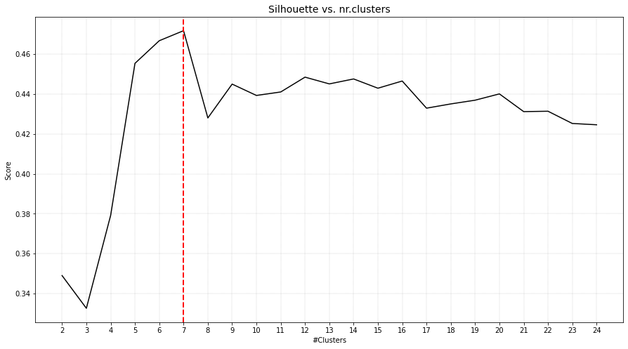 |
|

As can be seen, the inner circle is detected as one cluster but the outside circle is devided into multiple smaller clusters.
Single distance
If the aim is to cluster samples that are in a snake pattern, it is best to use the single linkage type as it hierarchically connects samples to the closest group.
from clusteval import clusteval
# Initialize
ce = clusteval(cluster='agglomerative', linkage='single', evaluate='silhouette')
# Fit
results = ce.fit(X)
# Plot
ce.plot()
ce.plot_silhouette()
ce.scatter(X)
|
|


As can be seen, the inner circle is detected as one cluster but the outside circle is devided into multiple smaller clusters.
Different Density Clusters
Many cluster evaluation methods can easily determine the optimal number of clusters when clusters are evenly distributed for which the groups of samples have similar density. Here I will generate groups of samples with various densities to demontrate the performance of the cluster evaluation methods.
Generate Dataset
Let’s generate 5 groups of samples, each with 200 but with different standard deviations per cluster.
# Generate data
X, y = ce.import_example(data='densities')
scatterd(X[:,0], X[:,1],labels=y)
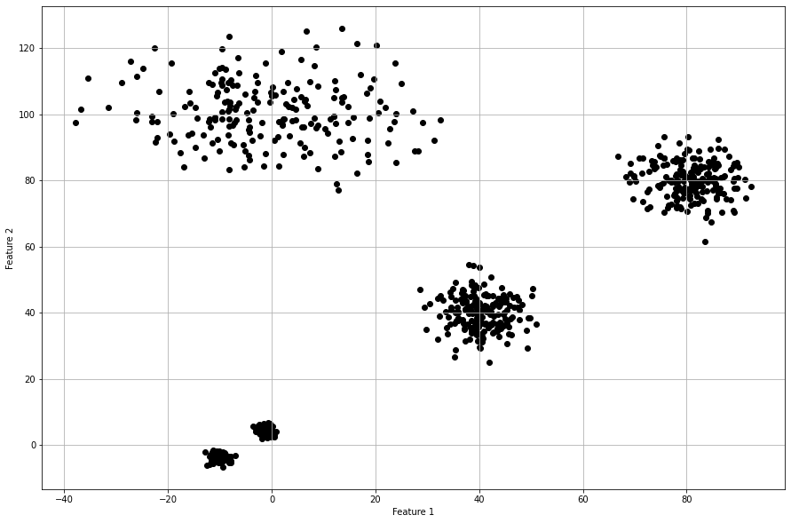 |
|

Derivative Method
The optimal number of clusters is 4 but the original dataet consits out of 5 clusters. When we scatter plot the samples with the etimated cluster labels, it can be seen that this approach has trouble in finding the correct labels for the smaller high density groups. Note that the results did not change in case of using the different clustering methods, such as ‘agglomerative’, and ‘kmeans’.
# Intialize model
ce = clusteval(cluster='agglomerative', evaluate='derivative')
# Cluster evaluation
results = ce.fit(X)
# The clustering label can be found in:
print(results['labx'])
# Make plots
ce.plot()
ce.plot_silhouette()
ce.scatter(X)
|

Silhouette Method
The silhouette method detects an optimum of 4 clusters. The scatterplot shows that it has troubles in finding the high density clusters. Note that when using cluster='agglomerative', similar results are detected.
# Intialize model
ce = clusteval(cluster='agglomerative', evaluate='silhouette')
# Cluster evaluation
results = ce.fit(X)
# The clustering label can be found in:
print(results['labx'])
# Make plots
ce.plot()
ce.plot_silhouette()
ce.scatter(X)
|
|


DBindex method
The DBindex method finds 4 cluster scores lowers gradually and stops at 22 clusters. This is (almost) the maximum default search space. The search space can be altered using min_clust and max_clust in the function function clusteval.clusteval.clusteval.fit(). It is recommended to set max_clust=10 to find the local minima.
# Intialize model
ce = clusteval(cluster='agglomerative', evaluate='dbindex')
# Cluster evaluation
results = ce.fit(X)
# The clustering label can be found in:
print(results['labx'])
# Make plots
ce.plot()
ce.plot_silhouette()
ce.scatter()
ce.dendrogram()
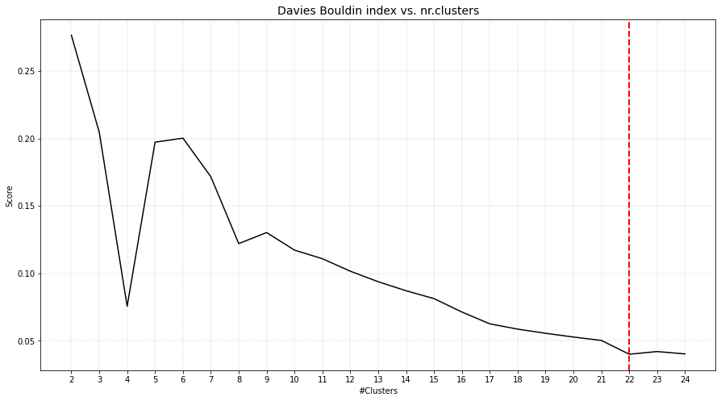 |
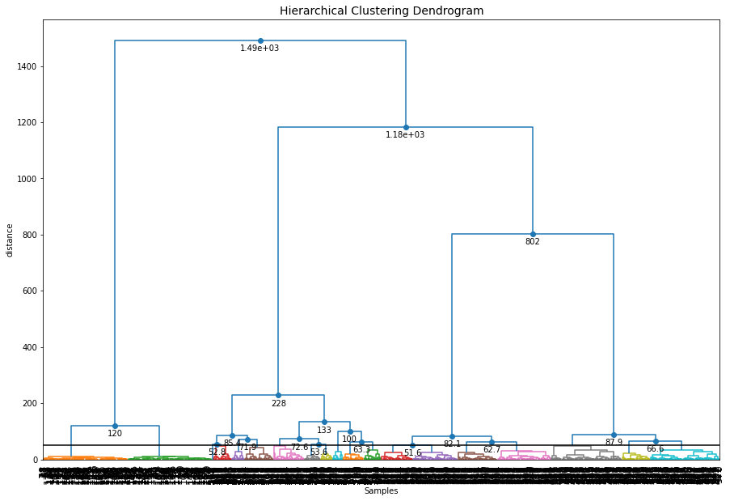 |
|
|

Set the max_clust=10 for find the local optimal minima.
# Intialize model
ce = clusteval(cluster='agglomerative', evaluate='dbindex', max_clust=10)
# Cluster evaluation
results = ce.fit(X)
# Make plots
ce.plot()
ce.plot_silhouette()
ce.scatter()
ce.dendrogram()
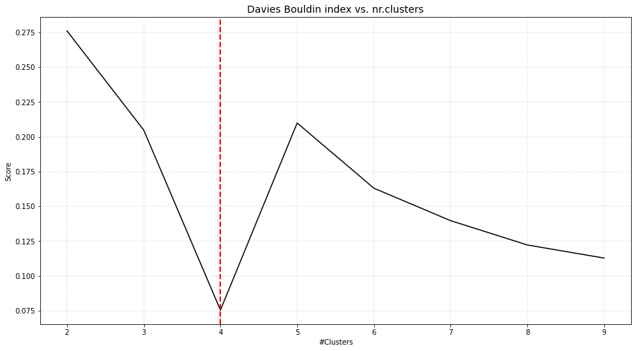 |
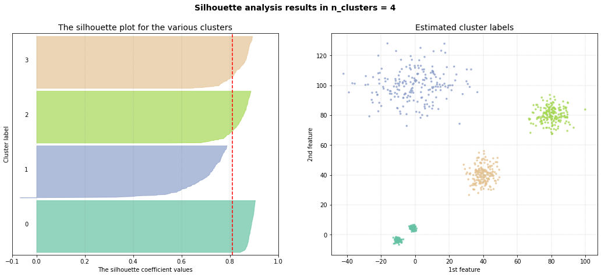 |
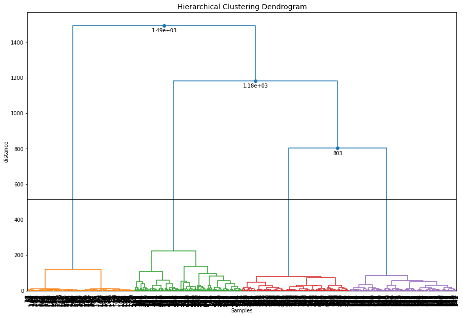 |
|
DBSCAN
The eps parameter is gridsearched together with a varying number of clusters. The global maximum is found at the expected 5 clusters. When we scatter the samples with the new cluster labels, it can be seen that this approach works pretty well. However, for the cluster with large deviation, many outliers are marked with the default parameters.
# Intialize model
ce = clusteval(cluster='dbscan')
# Parameters can be changed for dbscan:
# ce = clusteval(cluster='dbscan', params_dbscan={'epsres' :100, 'norm':True})
# Cluster evaluation
results = ce.fit(X)
# [clusteval] >Fit using dbscan with metric: euclidean, and linkage: ward
# [clusteval] >Gridsearch across epsilon..
# [clusteval] >Evaluate using silhouette..
# 100%|██████████| 245/245 [00:11<00:00, 21.73it/s][clusteval] >Compute dendrogram threshold.
# [clusteval] >Optimal number clusters detected: [7].
# [clusteval] >Fin.
# The clustering label can be found in:
print(results['labx'])
# Make plots
ce.plot()
ce.plot_silhouette()
ce.scatter()
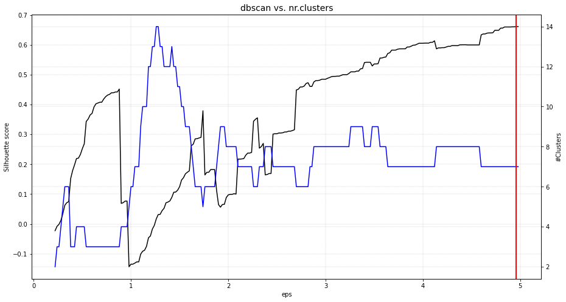 |
|

HDBSCAN
Install the library first because this approach is not installed by default in clusteval.
pip install hdbscan
# Intialize model
ce = clusteval(cluster='hdbscan')
# Cluster evaluation
results = ce.fit(X)
# Make plots
ce.plot()
ce.plot_silhouette()
ce.scatter()
|
|
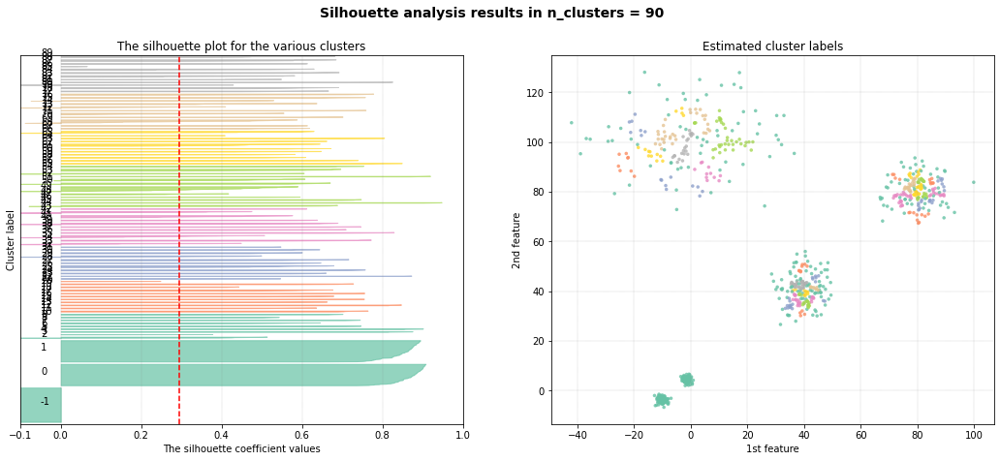 |
|


Cluster Comparison
A comparison of all four methods when using kemans is as shown underneath. The best approach is dbscan in case of having various density groups.
import clusteval
from scatterd import scatterd
import numpy as np
X, y = ce.import_example(data='blobs')
# X, y = datasets.make_circles(n_samples=n_samples, factor=0.5, noise=0.05)
plt.figure(figsize=(15,10))
plt.grid(True); plt.xlabel('Feature 1'); plt.ylabel('Feature 2')
plt.figure()
fig, axs = plt.subplots(2,4, figsize=(25,10))
font_properties={'size_x_axis': 12, 'size_y_axis': 12}
# dbindex
results = clusteval.dbindex.fit(X, max_clust=10)
_ = clusteval.dbindex.plot(results, title='dbindex', ax=axs[0][0], showfig=False, font_properties=font_properties)
axs[1][0].scatter(X[:,0], X[:,1],c=results['labx']);axs[1][0].grid(True)
# silhouette
results = clusteval.silhouette.fit(X)
_ = clusteval.silhouette.plot(results, title='silhouette', ax=axs[0][1], showfig=False, font_properties=font_properties)
axs[1][1].scatter(X[:,0], X[:,1],c=results['labx']);axs[1][1].grid(True)
# derivative
results = clusteval.derivative.fit(X)
_ = clusteval.derivative.plot(results, title='derivative', ax=axs[0][2], showfig=False, font_properties=font_properties)
axs[1][2].scatter(X[:,0], X[:,1],c=results['labx']);axs[1][2].grid(True)
# dbscan
results = clusteval.dbscan.fit(X)
_ = clusteval.dbscan.plot(results, title='dbscan', ax=axs[0][3], showfig=False, font_properties=font_properties)
axs[1][3].scatter(X[:,0], X[:,1],c=results['labx']);axs[1][3].grid(True)
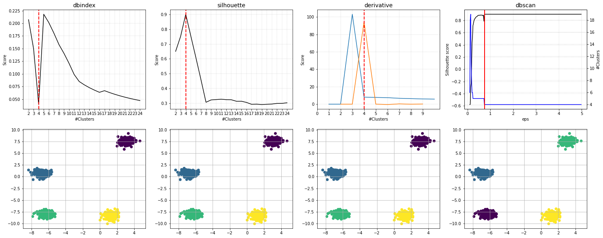 |
Clustering Categorical Data
Let’s load an example data set of online shoppers’ intentions and perform the clustering and evaluation step. This data set contains in total of 12330 samples with 18 features. I decided to use a mixed dataset which allows me to also demonstrate some of the required pre-processing steps. Thus, the first step is to create homogeneous data sets with units that are comparable. A common manner to work with mixed data sets is by discretizing and creating a one-hot matrix. I will use the df2onehot library, with the following pre-processing steps to discretize:
Categorical values 0.0, None, ? and False are removed.
One-hot features with less than 50 positive values are removed.
For features that only had 2 categories, only one is kept.
Features with 80% unique values or more are considered to be numeric.
The pre-processing step converted the data set into a one-hot matrix containing the 12330 samples with 121 features. For clustering, we will be using agglomerative clustering with hamming distance and complete linkage. After running clusteval on the data set, it returns 9 clusters.
# Intall libraries
pip install df2onehot
# Import libraries
from clusteval import clusteval
from df2onehot import df2onehot
# Load data from UCI
url = 'https://archive.ics.uci.edu/ml/machine-learning-databases/00468/online_shoppers_intention.csv'
# Initialize clusteval
ce = clusteval()
# Import data from url
df = ce.import_example(url=url)
# Preprocessing
cols_as_float = ['ProductRelated', 'Administrative']
df[cols_as_float]=df[cols_as_float].astype(float)
dfhot = df2onehot(df, excl_background=['0.0', 'None', '?', 'False'], y_min=50, perc_min_num=0.8, remove_mutual_exclusive=True, verbose=4)['onehot']
# Initialize using the specific parameters
ce = clusteval(evaluate='silhouette',
cluster='agglomerative',
metric='hamming',
linkage='complete',
min_clust=2,
verbose='info')
# Clustering and evaluation
results = ce.fit(dfhot)
# [clusteval] >INFO> Saving data in memory.
# [clusteval] >INFO> Fit with method=[agglomerative], metric=[hamming], linkage=[complete]
# [clusteval] >INFO> Evaluate using silhouette.
# [clusteval] >INFO: 100%|██████████| 23/23 [00:28<00:00, 1.23s/it]
# [clusteval] >INFO> Compute dendrogram threshold.
# [clusteval] >INFO> Optimal number clusters detected: [9].
# [clusteval] >INFO> Fin.
Because the data contains 121 dimensions (the features), we can not directly visually inspect the clusters in a scatterplot. However, we can perform an embedding and then visually inspect the data using a scatterplot as shown in the code section below.
# Plot the Silhouette and show the scatterplot using tSNE
ce.plot_silhouette(embedding='tsne')
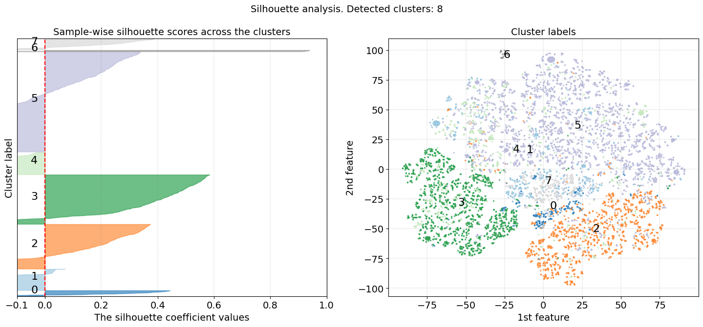 |
The results in Figure 1 (right panel) depict the scatterplot after a t-SNE embedding, where the samples are colored on the cluster labels. In the left panel is shown the Silhouette plot where we can visually assess the quality of the clustering results, such as the homogeneity, separation of clusters, and the optimal number of clusters that are detected using the clustering algorithm.
Moreover, the Silhouette score ranges from -1 to 1 (x-axis) for which a score close to 1 indicates that data points within a cluster are very similar to each other and dissimilar to points in other clusters. Clusters 2, 3, and 5 imply to be well-separated clusters. A Silhouette score close to 0 indicates overlapping clusters or that the data points are equally similar to their own cluster and neighboring clusters. A score close to -1 suggests that data points are more similar to points in neighboring clusters than to their own cluster, indicating poor clustering.
The width of the bars represents the density or size of each cluster. Wider bars indicate larger clusters with more data points, while narrower bars indicate smaller clusters with fewer data points. The dashed red line represents the average silhouette score for all data points. It serves as a reference to assess the overall quality of clustering. Clusters with average silhouette scores above the dashed line are considered well-separated, while clusters with scores below the dashed line may indicate poor clustering. In general, a good clustering should have silhouette scores close to 1, indicating well-separated clusters. However, in our use case, we clustered our data in high dimensions and now evaluate the clustering results after a t-SNE embedding in the low 2-dimensional space.
Instead, we can also do the embedding first and then cluster the data on the low-dimensional space (see code section below). Now we will use the Euclidean distance metric because our input data is not one-hot anymore but are the coordinates from the t-SNE mapping. After fitting, we detect an optimal number of 27 clusters, which is a lot more than in our previous results. We can also see that the cluster evaluation scores in Figure 2 appear to be turbulent. This has to do with the structure of the data and describes that at certain threshold cuts, optimal clusters can be formed.
# Initialize library
from sklearn.manifold import TSNE
xycoord = TSNE(n_components=2, init='random', perplexity=30).fit_transform(dfhot.values)
# Initialize clusteval
ce = clusteval(cluster='agglomerative', metric='euclidean', linkage='complete', min_clust=5, max_clust=30)
# Clustering and evaluation
results = ce.fit(xycoord)
# Make plots
ce.plot()
ce.plot_silhouette()
This Silhouette plot does show better results than our previous results as the score of the clusters is higher, indicating well-separated clusters. It is great to have these clustering results but what does it mean?
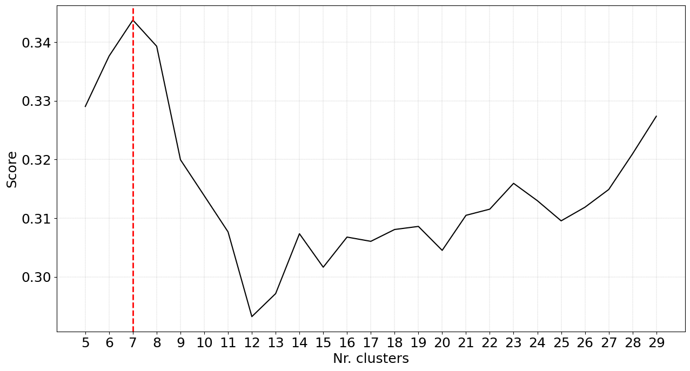 |
|

Detect the Driving features
This example is the next step from the example above this section. To detect the driving features behind the cluster labels, we can compute the statistical association between the features and the detected cluster labels. This will point out whether certain values of one variable tend to co-occur with one or more cluster labels. Various statistical measures of association, such as the Chi-square test, Fisher exact test, and Hypergeometric test, are commonly used when dealing with ordinal or nominal variables. I will use the Hypergeometric test to test for the association between categorical variables and the cluster labels, and the Mann-Whitney U test for the association between continuous variables and the cluster labels. These tests are readily implemented in HNET, which is in turn utilized in the clusteval library. With the enrichment functionality, we can now easily test for statistically significant associations. When we then again use the scatter functionality, the results are shown too.
# Enrichment between the detected cluster labels and the input dataframe
enrichment_results = ce.enrichment(df)
# Make scatterplot and plot the top n_feat enriched features.
ce.scatter(n_feat=2)
|